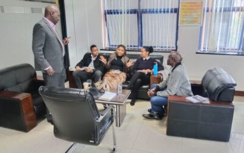

Advancing Intersex Rights: Stakeholders’ Meeting on Advocacy, Institutional Development, and Legislative Engagement

On 22nd August 2025, a consultative meeting was convened to deliberate on strengthening intersex advocacy in Kenya and beyond. The session brought together key stakeholders committed to advancing the rights and visibility of intersex persons. Present at the meeting were Commissioner Dr. Wamalwa Dennis, Tara Ndichu, Ashton Kany’arati, Faiza Abdulqadir, Michael Otieno, and Sindani Kelvin.
The discussions focused on three critical areas:
1. Advancing Intersex Advocacy
Participants underscored the importance of sustained advocacy efforts to ensure intersex persons are not left behind in Kenya’s human rights discourse. It was noted that advocacy must be deliberate, inclusive, and strategic in engaging policymakers, communities, and institutions.
2. Establishing an Intersex-Focused NGO
The meeting also recognized the urgent need to establish a dedicated non-governmental organization (NGO) to specifically address intersex matters. This institution will serve as a central platform for mobilizing resources, amplifying voices, and providing structured support for intersex persons in Kenya. Members committed to working collaboratively to lay the groundwork for its registration and operationalization.
3. Legislative Engagement: The Intersex Persons Bill
Commissioner Dr. Wamalwa Dennis reaffirmed his commitment to follow up with the Office of the Attorney General on the progress of the Intersex Persons Bill. He emphasized that legal recognition and protection remain at the core of the intersex movement, and timely legislative interventions are crucial in addressing longstanding challenges faced by intersex persons.
Way Forward
The meeting concluded with a shared resolve to maintain momentum through continuous dialogue, stakeholder mobilization, and active engagement with state and non-state actors. With renewed energy and collaboration, the stakeholders expressed optimism that the intersex movement in Kenya is entering a new phase of visibility, recognition, and institutional strengthening.